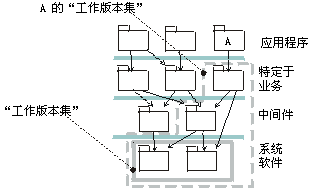

|
在大型系统中最多可有一百个实施子系统，这使计划集成成为一项复杂的任务。
为了促进集成计划和管理复杂性，需要减少要考虑的事项。建议定义多组有意义的子系统（工作版本集合或工作版本塔），从集成的观点来看，这些子系统是一起的。“一起”表示这些子系统有时作为一个组集成；只集成其中一个子系统并无意义。例如，子系统需要（直接或间接导入）执行的低层的所有子系统可以是一个有意义的工作版本集合。

如果这两个子系统通常是作为组来集成的，则工作版本集合是为最低层定义的。对编译和执行子系统 A 所需的所有子系统定义工作版本集合。
请注意，工作版本集合可以并将会有重叠。在项目期限内，您拥有的工作版本集合及其内容会有变化。
定义这些工作版本集合的目的是更易执行集成计划。不必考虑单个的子系统，可以只考虑各组子系统。
|